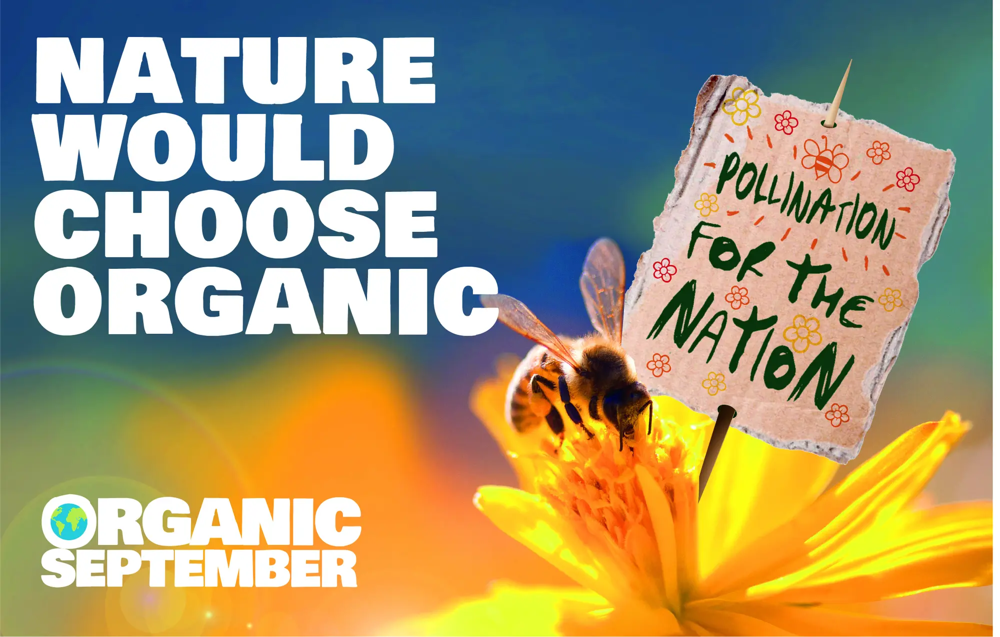
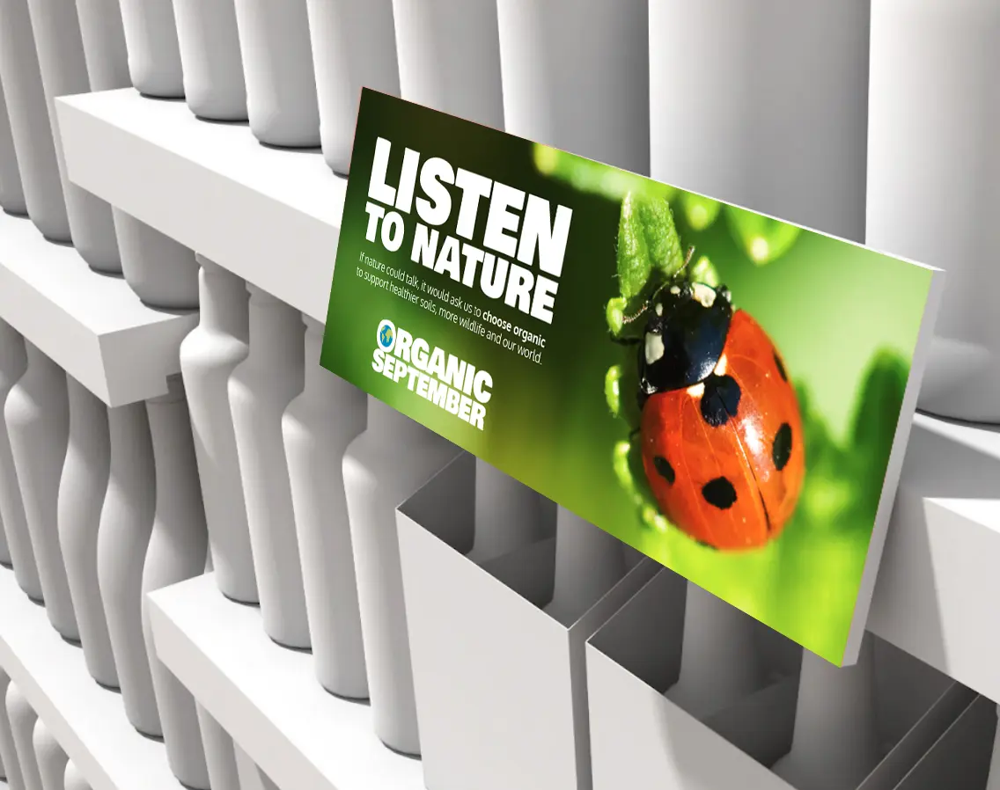

Social & retail campaign
Organic September
Traditional farming methods are killing the natural world. Bad news for nature, bad news for us. Organic has the answer, but not everyone is willing to listen. Social campaign on behalf of Planet Shine.

The work
Invention
Listen To Nature
Organic products can be perceived as an expensive choice, which is understandable, until you consider the alternative. No ladybirds, no bees, no earthworms – no food. Not enough people are hearing the message, so we did what all right thinking, planet loving citizens do in these circumstances. Started a protest.

